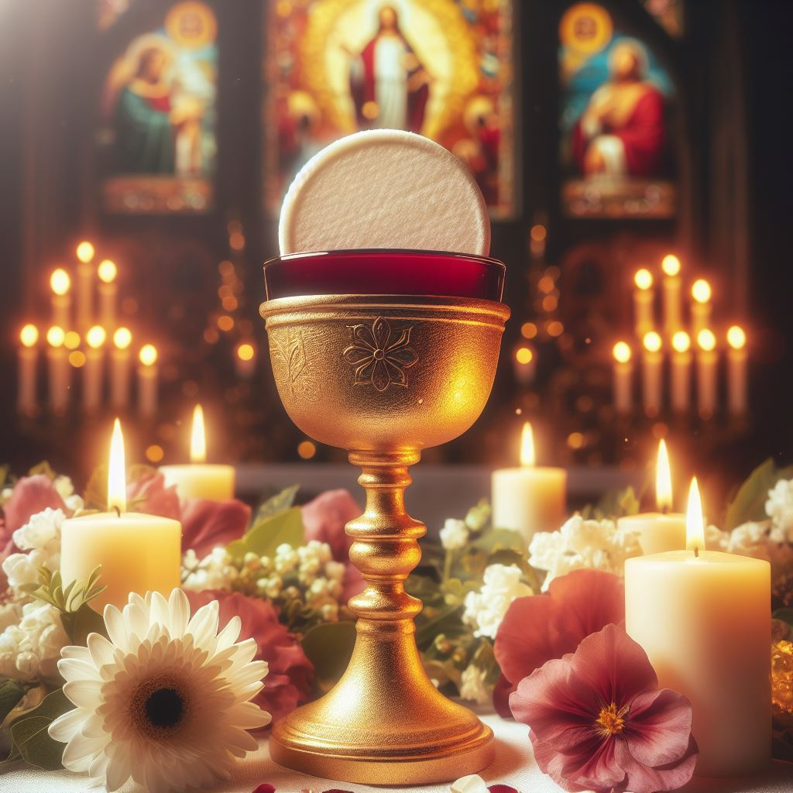

Visualizing Vocations
Oliver: Good afternoon, fellow theologians! Joining us today on the Visualizing Vocations Podcast is an incredibly special guest, who has come all the way from the Vatican City. Please welcome, the one and only, Pope Saint John Paul II!
Oliver: In his time as a Pope, he did many remarkable feats, that ranged from creating World Youth Days to serving the poor on a more personal basis.
JPII: Thank you, Oliver. My goal as Pope was to ensure that all younglings knew that the faith is all about love and God’s never-ending divine mercy.
Oliver: Yes! I loved your message on these matters, and I found your message truly inspirational for future generations. That said, let's start!
Oliver: What do you think is the biggest obstacle to faith?
JPII: The distractions in today’s society provide a major distraction to the faith and take people away from God’s grace.
Oliver: I completely agree, could you elaborate on what distractions you view as the most detrimental to society?
JPII: Technology, especially cell phones, has proven to be the most detrimental of all distractions to the faith. The young are the most important to faith, and yet we are losing them due to social media and a craving for popularity.
Oliver: I completely agree with you. So, do you think that the young are the most important to faith?
JPII: Yes! The future generations are the future of the faith and without them, Catholicism could not live on!
Oliver: Yes! Agree! That said, what essential message do you think we need to teach future generations about faith?
JPII: We need to teach the future generations that God’s love is open to all. He loves everyone within his image and likeness, no matter what sins they have committed or their socioeconomic status in society.
Oliver: That’s great! It is important to know that God’s love can be found in everything. What about forgiveness? How do you view God’s love in forgiveness?
JPII: God’s love is found the most in forgiveness. It is important that Jesus’ everlasting mercy is found in forgiveness. The sacrament of reconciliation provides billions around the world the opportunity to reconcile their sins and to strengthen their connection with God.
Oliver: Absolutely, it is important to go to your parish and to seek God’s grace through confession and reconciliation. What do you view as the biggest problem facing peoples’ struggles to admit their mistakes today?
JPII: “Man must reconcile himself to his natural greatness. . . . he must not forget that he is a person.” People forget that God does not judge us by our actions only, but he judges us by our nature, he loves all of us as his son.
Oliver: Well said! With that being said, what sacrament do you view as the most important?
JPII: By far, I think the sacrament of communion is the most important. “The Eucharist is the secret of my day. It gives strength and meaning to all my activities of service to the church and to the whole world.”
Oliver: That’s truly a beautiful way to describe the Holy Eucharist. Who do you view as the most prominent members of society? How does receiving the Holy Eucharist enrich our lives?
JPII: I view the poor and sick as the most notable members of society. “A society will be judged on the basis of how it treats its weakest members.” The Holy Eucharist enriches our lives by bringing us closer to God. In other words, it is important that you “make your lives intensely Eucharistic."

Oliver: I completely agree. What are your thoughts on the Virgin Mary? What impact does she have on one’s life? What do you think her vocation to the Church represents?
JPII: “Mary is the sure path to our meeting with Christ. Devotion to the Mother of the Lord, when it is genuine, is always an impetus to a life guided by the spirit and values of the Gospel.” Mary brings meaning to one’s life and her vocation to the Church represents how God calls us all to join in his kingdom. We just need to respond to his call and accept his invitation into his kingdom.
Oliver: Wow! Just wow! Incredibly powerful words spoken by you! This transitions well into my next focus: God’s call. How and when does God call us? How can someone who struggles with giving up their materialistic possessions live out God’s vocation?
JPII: “God has, in fact, thought of us from eternity and has loved us as unique individuals. He has called every one of us by name, as the Good Sheperd ‘calls His sheep by name.’” People who struggle to sacrifice will struggle in their journey to be closer to Christ. “Each man, in his suffering, can also become a sharer in the redemptive suffering of Christ.” Ultimately, suffering like Christ did brings us closer to feeling what it is like to carry the cross, as ultimately, we all carry our own crosses with our sin.
Oliver: Well said! Today’s society has forgotten how suffering brings us closer to God and his love. Last question: What do you think one should do to find their vocation in life? What is each of our vocations?
JPII: “Many people mistake our work for our vocation. Our vocation is the love of Jesus.” To find our love of Jesus, we must go to mass every Sunday, holy days, and spend time in prayer with God. Prayer is a conversation with God, and without prayer, we will not truly be able to speak to and love God.
Oliver: Excellent! Well, you’ve heard it here, folks! Live out a life of Christ and be open to God’s love. Thanks for coming in today, Pope Saint John Paul II! This is the Visualizing Vocations Podcast!